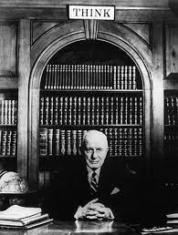

Thomas John Watson Sr was an American businessman who continued as chairman after his father and CEO of IBM. Watson developed IBM's management style and corporate culture from Jhon Henry Patterson's training at NCR. His aggressive tactics and heavy outlays for research established IBM's dominance in the industry so thoroughly. He oversaw the company's growth into an international force from 1914 to 1956. He was one of the richest men of his time. He died in 1956 when he was well known for world's greatest salesman.
| Category | Bio |
|---|---|
| Born | February 17, 1874 |
| Address | Campbell, New York, U.S. |
| Occupation | Chairman and CEO of IBM |
| Died | June 19, 1956 |